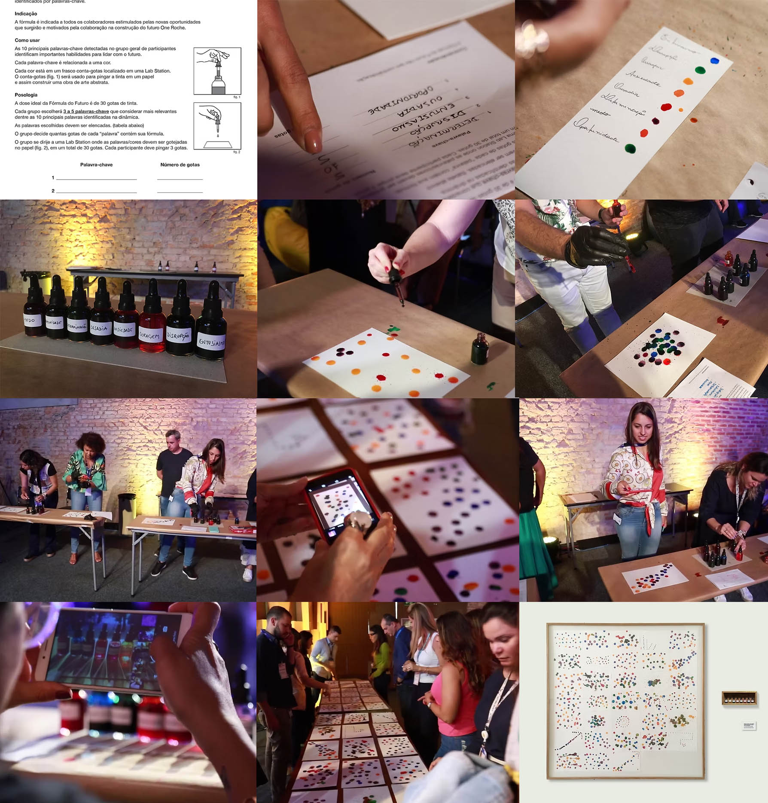

FORMULA FOR THE FUTURE | ROCHE
THE CHALLENGE
Visualize the Roche professional best prepared for a changing business landscape during a strategy and team-building event involving 400 employees.
THE ACTIVITY
Bring the “Formula for the Future” to life through the collective creation of an artwork using drops of colored paint. Participants identify the skills they believe will matter most, associate each with a color and represent the ideal blend of capabilities through an abstract collaborative composition.
